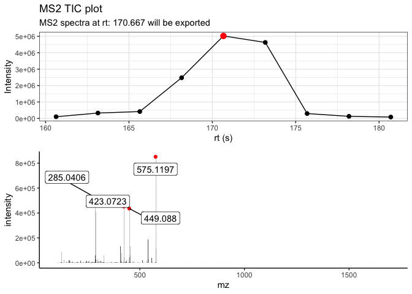

The goal of MS2extract is to create a tool to import MS2 data of known standards or material and targeted extract the MS2 expectra in order to create an in-house MS2 library.
Installation
You can install the development version of MS2extract from GitHub with:
# install.packages("devtools")
devtools::install_github("CooperstoneLab/MS2extract")Example
PPM calculation
with ppm_range you can compute a the ppm error given a m/z value and a ppm tolerance.
library(MS2extract)
## calculating ppm range
chlorogenic_acid_pos <- 355.1023
ppm_error = 10
# Calculate ranges
ppm_range(mz = chlorogenic_acid_pos, ppm = ppm_error)
#> [1] 355.0987 355.1059Importing mzxml files
You can import mzxml files by import_mzxml() function. This will import your data into a data frame. In this case we are going to work with the Procyanidin A2 spectra in neg mode with a collision energy of 20eV.
ProcA2_file <- system.file("extdata",
"ProcyanidinA2_neg_20eV.mzXML",
package = "MS2extract")
ProcA2_raw <- import_mzxml(ProcA2_file)
#> Reading MS2 data from ProcyanidinA2_neg_20eV.mzXML
#> Processing...Extracting Procyanidin A2 spectra
In this case, the mzxml file contains only the scans of this metabolite and the extract_MS2() functions exports the most intense MS2 scans, and displays the TIC indicating which scan is using to export the MS2 data.
ProcA2_ext <- extract_MS2(ProcA2_raw)
This function returns a list, which contains the MS2 spectra, and the TIC plot. Since the extracted MS2 spectra contains low intensity signals (backgroun) noise, you can remove them by using the detect_mass() function.
The raw MS2 spectra contains.
Detecting masses
The objective is to remove low intensity signals, you can detec masses by allowing normalization by the base peak and then filtering the signals by a minimum treshold, or detecting mass with the abolute signal intensity.
Here, we will detect masses by normalization and with a minimum intensity of 1%
ProcA2_detected <- detect_mass(ProcA2_ext$MS2_spec,
normalize = TRUE, # Allow normalization
min_int = 1) # 1% as minimum intensity
dim(ProcA2_detected)
#> [1] 38 4Although the resulting MS2 spectra contains 38 signals, for displaying purposes we are going to include signlas greater than 10% intensity
dplyr::filter(ProcA2_detected, intensity > 10)
#> mz intensity mz_precursor rt
#> 1 285.0406 62 575.1196 170.667
#> 2 289.0718 48 575.1196 170.667
#> 3 407.0769 16 575.1196 170.667
#> 4 423.0723 53 575.1196 170.667
#> 5 449.0880 51 575.1196 170.667
#> 6 452.0745 15 575.1196 170.667
#> 7 539.0983 22 575.1196 170.667
#> 8 575.1197 100 575.1196 170.667
#> 9 576.1221 13 575.1196 170.667